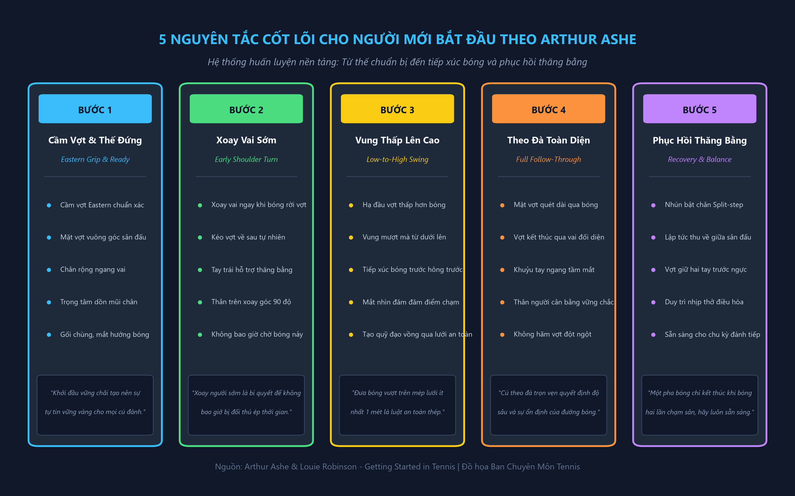
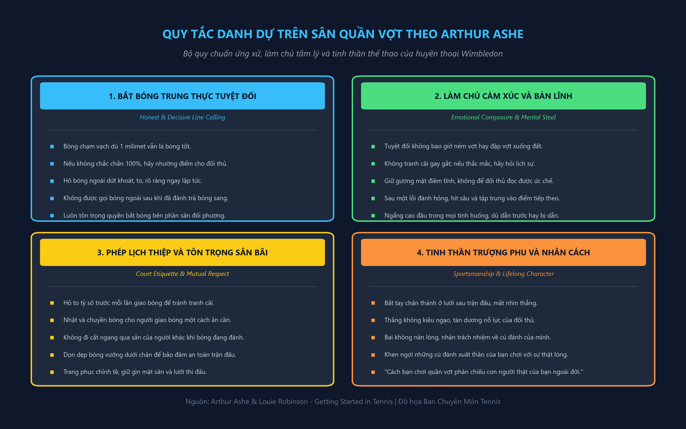

Lời Nhắn Gửi Các Bạn Trẻ, Trang Bị Cốt Lõi & Nghệ Thuật Cú Thuận Tay Nền Tảng
Chương 1: Gửi Các Bạn Trẻ Yêu Quần Vợt
Có rất nhiều lý do thôi thúc tôi chấp bút viết nên cuốn cẩm nang quần vợt này dành riêng cho những tay vợt trẻ tuổi như bạn. Lý do quan trọng hàng đầu bắt nguồn từ thực tế: một cuốn sách như thế này thực sự đang rất thiếu vắng. Bất cứ khi nào tôi ghé thăm các hiệu sách hay thư viện trường học, những đầu sách về quần vợt duy nhất tôi tìm thấy đều được viết cho người lớn. Tuy nhiên, bản thân tôi đã bắt đầu làm quen với quả bóng nỉ từ khi mới lên bảy tuổi, và vào thời kỳ ấy, cũng chẳng có cuốn sách nào được biên soạn riêng cho những đứa trẻ như tôi.
Quần vợt là một trong số rất ít những môn thể thao kỳ diệu mà bạn có thể bắt đầu tập luyện từ khi còn là một cô cậu bé tiểu học và tiếp tục tận hưởng nó cho đến khi đã bảy mươi hay tám mươi tuổi. Chúng tôi gọi đây là "môn thể thao trọn đời" (a lifetime sport). Bóng đá Mỹ, bóng rổ hay bóng chày đòi hỏi sự va chạm thể lực khốc liệt và khó có thể duy trì khi bạn bước qua sườn dốc bên kia của tuổi thanh xuân, nhưng quần vợt sẽ luôn đồng hành bên bạn, mang lại sức khỏe dẻo dai, sự minh mẫn và tình bạn bè gắn kết qua nhiều thế hệ.
- Học cách yêu thích quá trình rèn luyện: Đừng vội vã đếm số quả bóng bạn đánh hỏng. Mỗi cú đánh bay ra ngoài hay mắc lưới đều là một phản hồi quý giá giúp não bộ và cơ bắp điều chỉnh nhịp vận động.
- Xây dựng kỹ thuật chuẩn mực ngay từ ngày đầu: Những thói quen xấu hình thành trong giai đoạn đầu sẽ bám rễ rất dai dẳng. Việc sửa chữa một động tác sai sau này tốn nhiều công sức gấp mười lần việc học đúng ngay từ bước khởi đầu.
- Giữ vững thái độ điềm tĩnh và phong thái đĩnh đạc: Quần vợt là cuộc chiến nội tâm giữa sự tập trung và nỗi thất vọng. Người chiến thắng thực sự không phải là người đánh bóng mạnh nhất, mà là người biết làm chủ cảm xúc của chính mình.
Khi bạn bắt đầu, hãy nhớ rằng không ai sinh ra đã là một nhà vô địch Grand Slam. Những cú giao bóng sấm sét hay những pha trả giao bóng ngoạn mục mà bạn nhìn thấy trên màn hình truyền hình đều được hun đúc từ hàng ngàn giờ tập luyện lặp đi lặp lại một cách bền bỉ trên sân tập. Điều kỳ diệu là hành trình ấy không hề buồn tẻ nếu bạn biết cách tìm kiếm niềm vui trong từng đường bóng, từng bước chạy và từng tiếng nảy giòn giã của quả bóng trên mặt sân.
Chương 2: Bạn Cần Gì Để Bắt Đầu?
Bây giờ, chúng ta hãy cùng thảo luận về một chủ đề vô cùng quan trọng mà ngay cả cha mẹ của bạn cũng có thể chưa nắm rõ, dù bản thân họ có thể đã chơi quần vợt nhiều năm. Đó chính là việc lựa chọn trang thiết bị thi đấu phù hợp với thể trạng lứa tuổi.
Chiều Dài Cây Vợt Chuẩn
Hầu hết các cây vợt tiêu chuẩn dành cho người lớn đều có chiều dài 27 inches (khoảng 68,6 cm). Tuy nhiên, độ dài này là quá dài và quá nặng đối với các bạn trẻ dưới mười ba hoặc mười bốn tuổi. Hãy thử hình dung một cầu thủ khúc côn cầu hay một tay đập bóng chày chuyên nghiệp: họ không bao giờ đưa cây gậy của giải vô địch quốc gia cho các em nhỏ ở giải bóng chày thiếu nhi (Little League) sử dụng.
Kích Thước Tay Cầm (Grip Size)
Kích thước chu vi cán vợt là yếu tố quyết định độ chắc chắn khi tiếp xúc bóng. Để kiểm tra kích thước cán vợt có vừa tay hay không, bạn hãy nắm chặt cán vợt theo tư thế chuẩn: khoảng cách giữa đầu ngón tay áp út và phần đệm lòng bàn tay phải vừa vặn lọt ngón trỏ của bàn tay còn lại.
Bên cạnh cây vợt, đôi giày thi đấu là vật dụng bạn tuyệt đối không được phép xem nhẹ. Bạn không nên sử dụng giày chạy bộ thông thường (running shoes) để chơi quần vợt. Giày chạy bộ được thiết kế đế cao với độ bám hướng về phía trước, rất dễ gây trượt ngã hoặc lật sơ mi cổ chân khi bạn thực hiện các bước di chuyển ngang và đổi hướng đột ngột. Giày quần vợt chuyên dụng có phần đế bằng phẳng, rãnh xương cá chống trượt và hai bên hông được gia cố vững chắc để bảo vệ mắt cá chân của bạn.
Chương 3: Bài Học Số 1 — Kỹ Thuật Cú Thuận Tay (The Forehand)
Cú thuận tay (Forehand stroke) là nền tảng cơ bản nhất của toàn bộ trò chơi quần vợt. Đây là cú đánh tự nhiên nhất đối với hầu hết mọi người vì bạn đánh quả bóng bằng lòng bàn tay hướng về phía trước theo hướng bóng bay. Nếu bạn thuận tay phải, bóng sẽ ở bên phải cơ thể bạn; nếu bạn thuận tay trái, bóng sẽ ở bên trái cơ thể bạn.

1. Cách Cầm Vợt Thuận Tay Kiểu Eastern (The Eastern Forehand Grip)
Để cầm vợt cho cú thuận tay, bạn hãy đặt bàn tay lên cán vợt sao cho rãnh chữ V tạo bởi ngón tay cái và ngón tay trỏ nằm thẳng hàng dọc theo cạnh trên cùng bên phải của cán bát giác (đối với người thuận tay phải). Bạn cũng có thể hình dung động tác này giống như khi bạn đưa tay ra "bắt tay" một người bạn một cách tự nhiên và lịch thiệp. Khi bạn áp lòng bàn tay vào mặt phẳng cán vợt, phần thịt đệm dày ở gốc bàn tay sẽ nằm vững chãi ngay phía sau cán vợt.
Cấu trúc cầm vợt Eastern này mang lại sự trợ lực tối đa của cả lòng bàn tay và cẳng tay trực tiếp vào quả bóng tại thời điểm va chạm. Các ngón tay trên cán vợt cần được xòe nhẹ một cách linh hoạt thay vì nắm chặt nắm đấm như cầm một chiếc búa. Ngón trỏ hơi tách nhẹ lên phía trên sẽ đóng vai trò như một chiếc "cò súng" điều khiển cảm giác mặt vợt.
2. Tư Thế Chuẩn Bị (The Ready Position)
Giữa mỗi đường bóng đánh qua lại, bạn phải luôn quay trở về tư thế sẵn sàng tại khu vực giữa đường biên cuối sân. Hai bàn chân đứng rộng bằng vai, trọng tâm cơ thể dồn nhẹ lên phần đệm của mũi bàn chân (balls of feet), gót chân hơi nhấc nhẹ khỏi mặt đất. Hai đầu gối chùng xuống một cách tự nhiên để hạ thấp trọng tâm. Cây vợt được giữ bằng cả hai tay ngay trước ngực: tay phải cầm cán vợt theo kiểu Eastern, tay trái nhẹ nhàng đỡ lấy cổ vợt để chia sẻ trọng lượng và giữ thăng bằng.
3. Chuyển Động Xoay Thân Sớm & Vung Vợt (Early Preparation & Swing)
Khoảnh khắc tối quan trọng quyết định thành bại của một cú thuận tay nằm ở giây phút quả bóng rời khỏi mặt vợt của đối phương bên kia lưới. Ngay khi mắt bạn nhận diện được bóng đang bay sang phía thuận tay:
- Xoay vai sớm (Early Shoulder Turn): Xoay toàn bộ trục vai và hông sang bên phải một góc 90 độ so với lưới. Tay trái vẫn giữ cổ vợt đưa ra sau trong những phần trăm giây đầu tiên để hỗ trợ việc xoay thân trên hoàn toàn.
- Đường vợt mở thấp (Low Backswing): Kéo cây vợt về phía sau sao cho đầu vợt hạ thấp hơn tầm cao dự kiến của quả bóng khi chạm đất nảy lên. Đây là điều kiện tiên quyết để thực hiện cú đánh từ thấp lên cao (low-to-high).
- Bước chân chuyển trọng tâm: Bước chân trái (đối với người thuận tay phải) chéo về phía trước theo hướng bóng đến. Trọng tâm cơ thể lúc này bắt đầu chuyển dời từ chân sau sang chân trước.
- Tiếp xúc bóng ở phía trước (Point of Contact): Đánh bóng khi bóng đang ở khoảng cách ngang thắt lưng và chếch về phía trước hông trái khoảng một bàn chân. Mặt vợt tại thời điểm chạm bóng phải hoàn toàn vuông góc với mặt sân.
- Theo đà trọn vẹn (High Follow-Through): Tiếp tục đưa mặt vợt quét dài qua bóng, vươn cao và vòng qua vai trái đối diện. Cây vợt kết thúc động tác với khuỷu tay phải nâng cao ngang tầm mắt và ngực hướng thẳng về phía đối thủ.
“Rất nhiều người mới chơi lầm tưởng rằng một cú đánh hay là quả bóng phải bay là là sát mép lưới. Đó là sai lầm nguy hiểm nhất trong môn thể thao này. Mép lưới ở giữa sân cao 3 feet (khoảng 0,91 mét). Khoảng cách an toàn tối thiểu bạn cần nhắm tới là để quả bóng bay vồng cao hơn mép lưới từ 3 đến 4 feet (khoảng 1 mét đến 1,2 mét). Độ xoáy cuộn tự nhiên khi bạn vung vợt từ thấp lên cao sẽ kéo quả bóng cắm sâu xuống phần sân đối phương mà không bao giờ sợ bị rúc lưới.”
Hãy thử sức trả lời các câu hỏi dưới đây trước khi xem phần giải thích đáp án của Arthur Ashe ở phía dưới!
Cú Trái Tay Chuẩn Mực, Kỹ Năng Bắt Volley & Nghệ Thuật Giao Bóng Đỉnh Cao
Chương 4: Bài Học Số 2 — Kỹ Thuật Cú Trái Tay (The Backhand)
Cú đánh trái tay (Backhand stroke) được gọi với cái tên này đơn giản là vì khi bạn vung tay về phía quả bóng từ bên sườn trái của cơ thể (đối với người thuận tay phải), bạn đang thực sự đánh vào bóng bằng "mu bàn tay" hướng về phía mục tiêu.
Khó khăn lớn nhất mà người mới bắt đầu thường gặp phải ở cú trái tay chính là cảm giác kiểm soát. Khi bạn đánh cú thuận tay, toàn bộ lòng bàn tay dày dặn với sức mạnh của cơ bắp cẳng tay nằm ngay phía sau cán vợt để trợ lực. Nhưng khi chuyển sang cú trái tay, mu bàn tay của bạn lại nằm phía trước, và thứ duy nhất nâng đỡ cán vợt phía sau lúc này chỉ là ngón tay cái cùng các khớp xương ngón tay. Do đó, việc chuyển đổi cách cầm vợt đúng cách là chìa khóa sống còn.
Cách Cầm Vợt Trái Tay Eastern (Eastern Backhand Grip)
Để chuyển từ kiểu cầm thuận tay sang trái tay, bạn dùng tay trái giữ nhẹ lấy cổ vợt, sau đó xoay bàn tay phải khoảng một phần tư vòng về phía bên trái của cán vợt (ngược chiều kim đồng hồ).
Xoay Lưng Về Phía Lưới (Full Shoulder Pivot)
Ở cú trái tay, bạn không chỉ xoay vai nghiêng 90 độ mà trên thực tế, vai phải của bạn phải xoay sâu đến mức lưng của bạn gần như quay một phần về phía đối thủ bên kia lưới.
Hành Trình Vung Vợt Và Điểm Tiếp Xúc Cú Trái Tay
Điểm tiếp xúc bóng của cú trái tay cần diễn ra sớm hơn và ở xa phía trước hơn so với cú thuận tay. Quả bóng phải được đón nhận ngay phía trước mũi bàn chân phải của bạn. Nếu bạn để bóng lọt ngang tầm hông hoặc ra phía sau thân người, lực va đập sẽ bẻ gãy cổ tay của bạn, khiến mặt vợt bị lật ngửa và quả bóng sẽ bay bổng lên trời hoặc ra ngoài sân hàng mét.
Cánh tay đánh bóng phải được duỗi thẳng tương đối khi tiếp xúc, và cây vợt tiếp tục vung dài từ thấp lên cao. Động tác theo đà (follow-through) của cú trái tay một tay kết thúc với cánh tay phải vươn cao, đầu vợt chỉ lên trời và ngực mở rộng hoàn toàn. Tay trái duỗi ngược về phía sau để đóng vai trò đối trọng, giữ cho trục xương sống luôn thẳng đứng và cân bằng tuyệt đối.
Hãy trả lời nhanh các câu hỏi sau để tự đánh giá mức độ thấu hiểu kỹ thuật trái tay của bạn:
Chương 5: Bài Học Số 3 — Kỹ Thuật Bắt Volley Trên Lưới (The Volley)
Cú bắt volley là một cú đánh được thực hiện khi quả bóng vẫn còn đang bay trên không trung và chưa hề chạm đất trên phần sân của bạn. Khi bạn tiến lại gần mép lưới, thời gian phản xạ chỉ còn tính bằng những phần mười giây. Đây là khu vực của tốc độ, sự quyết đoán và độ chính xác sắc bén.
Trên lưới, bạn không bao giờ có đủ thời gian để chuyển đổi qua lại giữa cách cầm thuận tay và cách cầm trái tay. Do đó, bạn phải sử dụng một cách cầm vợt duy nhất cho tất cả các tình huống: cách cầm Continental (cầm vợt búa). Rãnh chữ V giữa ngón cái và ngón trỏ được đặt ngay chính giữa mép vát trên cùng của cán vợt. Kiểu cầm trung gian này cho phép bạn đỡ bóng bên phải hay bên trái chỉ bằng một cú xoay cổ tay nhẹ mà không cần thay đổi vị trí bàn tay.
Nguyên Lý Cốt Lõi: "Đấm Bóng, Tuyệt Đối Không Vung Vợt" (Punch, Don't Swing)
Sai lầm lớn nhất và phổ biến nhất của các bạn trẻ khi lần đầu lên lưới là cố gắng vung vợt ra sau thật rộng như khi đứng ở cuối sân. Khi bạn ở cách lưới chỉ vài mét, quả bóng bay tới cực kỳ nhanh. Nếu bạn đưa vợt ra sau, bóng sẽ bay vụt qua người bạn trước khi bạn kịp đưa vợt trở lại!
Chương 6: Bài Học Số 4 — Kỹ Thuật Giao Bóng Chuẩn Xác (The Serve)
Cú giao bóng (Serve) là cú đánh quan trọng bậc nhất trong môn quần vợt vì mọi điểm số đều phải khởi nguồn từ nó. Đây cũng là cú đánh độc nhất vô nhị trên sân đấu mà bạn hoàn toàn làm chủ tình hình: quả bóng nằm trong tay bạn, đối thủ không thể tác động đến bạn, và bạn có quyền quyết định thời điểm cũng như nhịp điệu phát bóng.
1. Nghệ Thuật Tung Bóng (The Ball Toss)
Nếu bạn hỏi bất kỳ huấn luyện viên hàng đầu nào về bí quyết của một cú giao bóng hoàn hảo, câu trả lời luôn luôn là: cú tung bóng chuẩn xác. Cú giao bóng của bạn chỉ có thể tốt bằng chính cú tung bóng của bạn.
Bạn hãy cầm quả bóng bằng các đầu ngón tay của bàn tay không thuận, giống như đang nâng niu một quả trứng mỏng manh. Đừng bao giờ nắm chặt bóng trong lòng bàn tay. Khi bắt đầu tung bóng, hãy nâng toàn bộ cánh tay thẳng từ khớp vai một cách từ tốn và mượt mà. Đừng hất cổ tay hay xoắn các ngón tay. Bạn hãy thả nhẹ quả bóng ra ở tầm ngang mắt và để quán tính đưa bóng bay lên cao như thể bạn đang đặt một chiếc bình pha lê lên một chiếc kệ cao vô hình trên không trung.
2. Nhịp Điệu Đồng Bộ Hai Cánh Tay: "Cùng Xuống — Cùng Lên" (Down Together, Up Together)
Một cú giao bóng uyển chuyển phải có sự phối hợp nhịp nhàng giữa hai cánh tay. Khi bạn đứng phía sau đường biên cuối sân, hai chân mở rộng tự nhiên, hai bàn tay chụm lại trước ngực với quả bóng chạm nhẹ vào cổ vợt:
- Cùng hạ xuống: Hai cánh tay bắt đầu chuyển động cùng lúc hạ xuống dưới về phía hai bên đầu gối. Trọng tâm cơ thể hơi dồn về bàn chân sau.
- Cùng nâng lên: Tay trái bắt đầu nâng thẳng lên phía trước để tung bóng, đồng thời tay phải đưa cây vợt vòng ra phía sau lưng theo hình cánh cung mượt mà.
- Tư thế gãi lưng (Back-Scratch Position): Đầu vợt hạ chúc xuống phía sau lưng bạn như thể bạn đang dùng cạnh vợt để gãi ngứa giữa hai bả vai. Khuỷu tay phải nâng cao ngang tai.
- Vươn hết tầm với chạm bóng (Full Extension): Khi quả bóng đạt đến điểm rơi lý tưởng cao nhất, bạn đẩy mạnh chân sau, vươn thẳng toàn bộ cánh tay và thân người lên không trung để tiếp xúc bóng ở độ cao tối đa. Điểm tiếp xúc phải hơi chếch về phía trước đầu khoảng một gang tay vào bên trong sân.
- Theo đà và bước chân vào sân: Vợt quẹt mạnh qua bóng và quét vòng chéo sang sườn bên trái. Bàn chân sau bước tự nhiên qua vạch cuối sân vào trong sân để hãm đà và thiết lập thế thăng bằng.
Nghệ Thuật Bộ Chân, Luật Tính Điểm & Quy Tắc Ứng Xử Trọng Khí Của Nhà Vô Địch
Chương 7: Bài Học Số 5 — Nghệ Thuật Bộ Chân & Di Chuyển (Footwork in Tennis)
Trong suốt sự nghiệp thi đấu đỉnh cao của mình, tôi đã từng chứng kiến vô số tay vợt có cú thuận tay cực mạnh hoặc cú giao bóng rất uy lực nhưng vẫn không thể trở thành những nhà vô địch lớn. Lý do đơn giản là đôi chân của họ quá lười biếng hoặc di chuyển vụng về. Quần vợt là một trò chơi của vị trí: nếu bạn có mặt tại đúng điểm rơi với sự thăng bằng hoàn hảo trước khi vung vợt, việc đánh quả bóng sang phần sân đối diện sẽ trở nên dễ dàng đến tám mươi phần trăm.
Bước Trượt Ngang Không Đan Chân (Side-to-Side Skipping)
Khi bạn di chuyển ngang dọc theo vạch cuối sân để đuổi theo quả bóng, hãy sử dụng các bước trượt ngang nhẹ nhàng (skipping).
Nhịp Nhún Bật Tách Chân (The Split-Step)
Đây là kỹ thuật di chuyển bí mật của mọi tay vợt hàng đầu thế giới mà người mới chơi thường bỏ qua.
Trục Xoay Trọng Tâm Và Phục Hồi Thăng Bằng (Pivot & Recovery)
Khi bạn tiếp cận quả bóng để thực hiện cú đánh, hãy dùng chân sau làm trụ xoay (pivot), sau đó bước chân trước lên phía trước để khóa hướng đánh. Sau khi hoàn thành cú theo đà qua vai với cây vợt vươn cao, bạn không được đứng chôn chân nhìn ngắm đường bóng của mình! Hãy lập tức xoay người trên chân trước, sử dụng các bước trượt ngắn để thu hồi trọng tâm về khu vực trung tâm phía sau vạch cuối sân, đưa vợt trở lại tư thế hai tay trước ngực để chuẩn bị cho pha bóng tiếp theo.
Chương 8: Cách Tính Điểm Một Game... Set... Và Trận Đấu (Game, Set, Match)
Hệ thống tính điểm của quần vợt có vẻ kỳ lạ và phức tạp đối với những ai mới tiếp xúc lần đầu. Tại sao lại là 15, 30, 40 thay vì 1, 2, 3? Lịch sử kể lại rằng cách tính điểm này bắt nguồn từ nước Pháp cổ đại, nơi người ta sử dụng mặt đồng hồ tròn để đếm điểm: mỗi lần ghi điểm, kim đồng hồ nhích một phần tư cung tròn (15 phút, 30 phút, 45 phút, và sau này được rút ngắn thành 40 để tiện phát âm).
- 0 điểm (Love): Bắt nguồn từ từ tiếng Pháp "l'oeuf" nghĩa là quả trứng (hình dáng giống số 0). Khi chưa có điểm nào, tỷ số được gọi là Love.
- Điểm thứ nhất (15): Người chơi thắng pha bóng đầu tiên có 15 điểm.
- Điểm thứ hai (30): Người chơi thắng pha bóng thứ hai đạt 30 điểm.
- Điểm thứ ba (40): Người chơi thắng pha bóng thứ ba đạt 40 điểm.
- Tỷ số hòa 40-40 (Deuce): Bắt nguồn từ tiếng Pháp "à deux le jeu" (hai điểm nữa để thắng game). Để thắng game từ tỷ số Deuce, một tay vợt phải thắng liên tiếp hai điểm.
- Lợi thế (Advantage): Tay vợt thắng điểm sau Deuce giành được Lợi thế. Nếu người giao bóng giành lợi thế, gọi là Advantage In (Ad-in); nếu người đỡ bóng giành lợi thế, gọi là Advantage Out (Ad-out).
Cấu Trúc Set Đấu Và Loạt Tie-Break (7 Điểm)
Một hiệp đấu (Set) thông thường kết thúc khi một tay vợt thắng trước 6 game và duy trì cách biệt ít nhất 2 game (ví dụ: 6-4, 6-3, 6-2). Nếu tỷ số game hòa 5-5, set đấu sẽ kéo dài đến 7 (ví dụ: 7-5). Nếu hai bên hòa nhau 6-6, loạt Tie-break sẽ được áp dụng để phân định thắng thua:
Chương 9: Quy Tắc Ứng Xử & Văn Hóa Trọng Khí Trên Sân (Conduct on Court)
Đây là chương sách quan trọng nhất trong toàn bộ cuốn cẩm nang này. Bạn có thể là một tay vợt sở hữu những cú đánh sấm sét, nhưng nếu bạn là một kẻ thiếu trung thực, hay cáu gắt và thô lỗ trên sân, bạn sẽ không bao giờ nhận được sự tôn trọng từ bạn bè, đối thủ và người hâm mộ.

1. Tự Mình Làm Trọng Tài: Bắt Bóng Trung Thực Tuyệt Đối
Trong hầu hết các trận đấu nghiệp dư, giải đấu trẻ và những buổi chơi bóng hàng ngày, sẽ không có trọng tài ngồi trên ghế cao và cũng không có trọng tài dây. Bạn và đối thủ chính là những người tự điều hành trận đấu của mình. Hãy ghi nhớ nguyên tắc vàng: bạn có trách nhiệm bắt bóng trên toàn bộ phần sân của bạn, và đối thủ có trách nhiệm bắt bóng trên phần sân của họ.
“Đường vạch vôi sơn trên sân là một phần của sân đấu hợp lệ. Dù quả bóng chỉ chạm mép ngoài cùng của vạch vôi một phần trăm milimet, đó vẫn là một quả bóng tốt hoàn hảo. Nếu bạn không nhìn thấy rõ một khoảng cách trống giữa quả bóng và đường vạch, hoặc nếu bạn có bất kỳ chút nghi ngờ nào trong đầu, bạn bắt buộc phải tính điểm đó là bóng tốt cho đối thủ. Đừng bao giờ cướp điểm của người khác chỉ vì bạn muốn chiến thắng. Chiến thắng bằng sự gian lận là thất bại nhục nhã nhất.”
Khi bóng bay ra ngoài, bạn phải hô to từ "Bóng ngoài" (Out) hoặc giơ một ngón tay trỏ lên trời thật dứt khoát ngay lập tức. Tuyệt đối không được cố gắng đánh trả quả bóng sang sân đối phương rồi mới phân vân hô bóng ngoài! Nếu bạn đánh trả bóng sang, trận đấu mặc nhiên được xem là tiếp tục.
2. Kiểm Soát Cảm Xúc Và Bản Lĩnh Tâm Lý Thép
Quần vợt là một môn thể thao đầy thử thách tâm lý. Sẽ có những ngày gió to, sân trơn, hoặc bạn đánh hỏng những quả bóng ngớ ngẩn nhất. Kẻ yếu đuối sẽ ném cây vợt xuống đất, đập gãy khung vợt, đá quả bóng vào hàng rào hoặc la hét giận dữ.
Khi bạn ném vợt hay nổi nóng, bạn đang công khai gửi một thông điệp cho đối thủ biết rằng: "Tôi đang hoảng loạn, tôi đang mất kiểm soát, và bạn sắp đánh bại tôi rồi đấy!". Một tay vợt chân chính luôn giữ gương mặt bình thản như một pho tượng. Sau một pha đánh hỏng, hãy hít thở sâu, xoay lại mặt vợt, nhìn thẳng về phía trước và tập trung một trăm phần trăm sức lực cho điểm số tiếp theo.
3. Phép Lịch Thiệp Trên Sân Bãi
- Hô to tỷ số trước mỗi lần giao bóng: Người giao bóng luôn có nghĩa vụ hô to tỷ số game đấu hiện tại trước khi thực hiện cú tung bóng để cả hai bên đều minh bạch thông tin.
- Chuyền bóng lịch sự: Khi đối thủ cần bóng để giao, hãy nhặt bóng và đánh nhẹ nhàng hoặc lăn bóng êm ái về phía đối phương sao cho bóng nảy vừa tầm tay họ. Đừng bao giờ bắn bóng mạnh vào người đối thủ khi họ không chú ý.
- Không đi cắt ngang sân đấu đang chơi: Nếu bạn cần đi qua một sân đấu khác để vào sân của mình, hãy kiên nhẫn đứng đợi ở ngoài hàng rào cho đến khi pha bóng của họ kết thúc hoàn toàn mới xin phép đi qua.
- Bắt tay ấm áp ở cuối trận: Bất kể kết quả là thắng hay thua, ngay khi tiếng còi kết thúc trận đấu vang lên, bạn hãy tiến thẳng đến lưới, cởi mũ nếu có, chìa bàn tay ra bắt thật chặt tay đối thủ, mắt nhìn thẳng vào mắt họ và nói lời cảm ơn chân thành.
Chiến Thuật Sân Đấu Thông Minh, Thể Lực Toàn Diện & Con Đường Rèn Luyện Trọn Đời
Chương 10: Bài Học Số 6 — Các Cú Đánh Bổ Trợ Giúp Bạn Giành Chiến Thắng
Sau khi bạn đã thuần thục ba vũ khí nền tảng cốt lõi gồm cú thuận tay, cú trái tay và cú giao bóng, giờ là lúc bạn mở rộng kho vũ khí của mình bằng ba cú đánh chiến thuật đặc sắc: cú lốp bóng (The Lob), cú bỏ nhỏ (The Drop Shot) và cú đập bóng dứt điểm trên đầu (The Overhead Smash).
Cú Lốp Bóng (The Lob)
Đây là cú đánh đưa quả bóng bay vòng cung rất cao lên bầu trời. Có hai dạng lốp bóng chính:
- Lốp phòng thủ (Defensive Lob): Đưa bóng bay bổng cao chót vót khi bạn bị đối thủ dồn ép dạt ra xa ngoài sân, nhằm kéo dài thời gian để bạn chạy về vị trí trung tâm.
- Lốp tấn công (Offensive Topspin Lob): Đánh lốp bóng xoáy cuộn vượt qua tầm với của đối thủ khi họ đang đứng ôm lưới, làm bóng cắm thẳng xuống vạch cuối sân.
Cú Bỏ Nhỏ (The Drop Shot)
Một cú chạm bóng tinh tế và bất ngờ khiến quả bóng vừa vượt qua mép lưới là rơi nhẹ xuống đất và nảy rất thấp.
Cú Đập Smash (Overhead)
Vũ khí tối thượng để dứt điểm khi đối phương trả về một quả bóng lốp non hoặc một đường bóng bay bổng ngang đầu.
Chương 11: Bài Học Số 7 — Nghệ Thuật Chiến Thuật Thông Minh (Strategy)
Chiến thuật trong môn quần vợt có thể tóm gọn trong một khái niệm then chốt: Quần vợt xác suất cao (Percentage Tennis). Trong phần lớn các trận đấu phong trào và giải trẻ, hơn bảy mươi phần trăm điểm số kết thúc không phải do người này đánh bóng ghi điểm trực tiếp (winners), mà là do người kia tự đánh bóng hỏng (unforced errors). Kẻ chiến thắng là người biết cách giữ quả bóng trong sân bền bỉ hơn đối thủ thêm một lần đánh.
- Ưu tiên đánh bóng chéo sân (Cross-court): Đánh chéo sân mang lại quãng đường bóng bay dài hơn (khoảng cách đường chéo sân dài hơn đường thẳng gần 2 mét) và vượt qua phần giữa của mép lưới (nơi lưới võng xuống thấp nhất là 0,91 mét).
- Đánh bóng sâu vào hai góc cuối sân: Đẩy đối thủ lùi sâu ra phía sau đường biên sẽ tước đi cơ hội tấn công của họ và mở rộng khoảng trống trên sân cho bạn làm chủ thế trận.
- Góc đánh tiếp cận lưới (Approach Shot): Khi có cơ hội đánh bóng tấn công để tiến lên lưới, bạn nên đánh quả bóng dọc theo đường biên (Down the line) thay vì đánh chéo sân. Đánh dọc dây giúp bạn khép góc sân của đối thủ và chỉ cần di chuyển một bước ngắn để bắt quả bắt volley kết liễu.
- Nhận diện và khoét sâu điểm yếu: Hãy quan sát xem đối thủ có cú trái tay lỏng lẻo hay không biết đánh bóng cao trên vai. Hãy kiên trì dẫn bóng vào đúng vị trí đó để ép đối phương bộc lộ sai lầm.
Chương 12: Thể Lực, Mặt Sân Thi Đấu, Dinh Dưỡng & Con Đường Chuyên Nghiệp
Để trở thành một tay vợt giỏi giang và tràn đầy sức sống, tài năng trên sân chỉ chiếm một nửa; nửa còn lại thuộc về cách bạn chăm sóc và tôi luyện cơ thể của chính mình ngoài sân đấu.
Rèn Luyện Thể Lực Cho Lứa Tuổi Trẻ
Ở độ tuổi thanh thiếu niên, xương và các khớp sụn của bạn vẫn đang trong giai đoạn phát triển. Bạn tuyệt đối không nên tập các bài tạ nặng.
Dinh Dưỡng Và Bổ Sung Nước Đúng Cách
Nước là nguồn sống trên sân quần vợt. Khi bạn cảm thấy khát, cơ thể bạn thực chất đã bị mất nước nghiêm trọng từ mười lăm phút trước đó.
Hiểu Rõ Ba Mặt Sân Thi Đấu Phổ Biến
| Mặt Sân | Đặc Tính Nảy & Tốc Độ | Lối Chơi Phù Hợp |
|---|---|---|
| Sân cứng (Hard Court) | Bóng nảy trung bình, độ nảy rất đều đặn và chuẩn xác; bề mặt nhám làm mòn đế giày và bóng nhanh. | Phù hợp với lối chơi tấn công toàn diện từ cuối sân lẫn lên lưới. |
| Sân đất nện (Clay Court) | Bóng nảy chậm lại khi chạm đất và nảy cao hơn; người chơi có thể thực hiện kỹ thuật trượt trượt chân (sliding). | Ưu tiên lối chơi bóng bền bỉ kiên nhẫn, sử dụng cú xoáy cuộn topspin nặng. |
| Sân cỏ (Grass Court) | Tốc độ bóng bay cực nhanh, bóng trượt là là trên mặt cỏ và nảy rất thấp; bóng có thể nảy bất thường. | Lối chơi giao bóng lên lưới (Serve-and-Volley) và các cú cắt bóng slice hiểm hóc. |